Öppna din webbläsare och gå till
Klicka på knappen "Se inuti" så att du kan se koden.

Klicka sedan på knappen "Remix".
Döp om projekt till något som passar bättre.
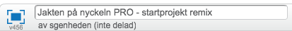
I denna uppgift ska du få koda en mer avancerad version av spelet "Jakten på nyckeln". Den kommer att vara lite närmare hur ett riktigt platsbaserat spel fungerar. Dock så krävs det mer avancerad kod för att få det att fungera, och därför är denna uppgift bara lämplig om du är en mer van kodare. Du behöver till exempel kunna använda variabler och kloner.
Ett exempel på hur spelet kan se ut hittar du här: https://scratch.mit.edu/projects/172533037
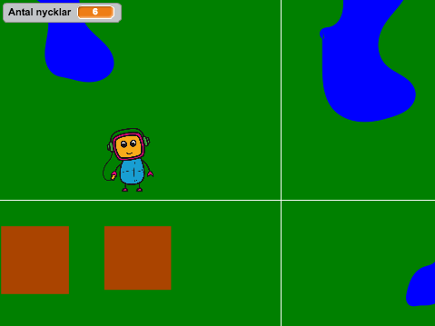
Vi börjar med att remixa ett befintligt projekt.
Öppna din webbläsare och gå till
Klicka på knappen "Se inuti" så att du kan se koden.
Klicka sedan på knappen "Remix".
Döp om projekt till något som passar bättre.
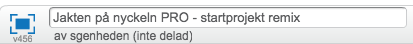
I projektet har du nu fem sprajtar. Fyra av dessa bildar bakgrunden, den karta som spelet utspelar sig på. Hur dessa fungerar ska vi titta på strax. Du har också en sprajt som är en robot och som kan röra sig över scenen.
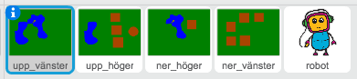
De fem sprajtarna i det remixade programmet
Testa programmet! Kan du förflytta roboten över scenen med hjälp av piltangenterna? Förflyttar sig scenen när du rör på roboten?
Det är bra om du förstår hur koden i det remixade programmet fungerar. På så sätt blir det enklare att förändra spelet efter dina önskemål. Du kanske vill utöka banan, eller använda dig av en egenritad bakgrund.
En sprajt eller en bakgrund kan i Scratch maximalt vara 480 pixlar bred och 360 pixlar hög, eftersom det är storleken på scenen. Därför är det svårt att importera till exempel en jättestor karta som bakgrund. I detta spel har vi löst det genom att skapa fyra sprajter som är 480 x 360 pixlar var och lägga dem sida vid sida, som så här:
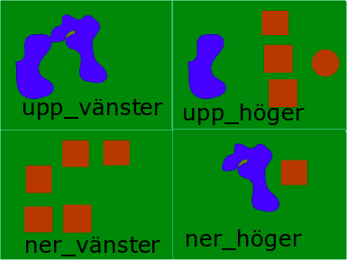
I bilderna som finns i det remixade spelet har en smal vit linje ritats ut mellan bilderna för att göra detta extra tydligt. Denna går självklart att ta bort, men för tillfället får den vara kvar.
När vi sedan rör roboten över scenen kommer bilderna att flyttas med roboten. Ibland kanske en hel bakgrunds-sprajt visas på scenen, ibland visas delar av två och ibland visas delar av tre, osv, beroende vara roboten är.
För att få detta att fungera så behöver vi introducera ett nytt koordinatsystem. Roboten kommer att förflytta sig inom det vanliga koordinatsystemet på scenen, medan bakgrunden kommer att förflytta sig i sitt eget koordinatsystem som vi skapar med hjälp av variabler. I stället för att ange koordinaterna med x och y i detta koordinatsystem så anges dem med variablerna "fokus x" och “fokus y”.
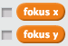
Nu tittar vi på koden för sprajten upp_vänster, den bakgrunds-sprajt som är längst upp till vänster. Den har ett enkelt skript som körs när den tar emot meddelandet "flytta". Det enda skriptet gör är att flytta sprajten till en ny position på scenen som beror på variablerna “fokus x” och “fokus y”.
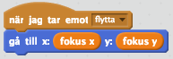
Liknande kod finns för de andra tre bakgrunds-sprajterna. Deras kod går ut på att placera den sprajten korrekt beroende på variablerna "fokus x" och “fokus y”.
Se om du kan förstå hur deras kod fungerar!
Sprajten Robot har lite mer kod, men mycket av den fungerar på samma sätt. Vi börjar med att titta på startskriptet.
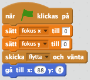
När spelet startar så sätts båda variablerna "fokus x" och “fokus y” till 0. Därefter så skickas meddelandet “flytta” som gör att alla bakgrund-sprajter placeras ut korrekt. Till sists så placeras roboten på ett lämpligt ställe på scenen.
Roboten har också fyra skript som startar när de fyra piltangenterna trycks ned. Vi tar och tittar på skriptet som körs när uppåt-pilen trycks ned.
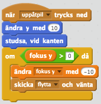
Det första som händer är helt enkelt att roboten förflyttas 10 steg längs y-axeln och studsar tillbaka om den nuddar kanten. Det är inte så konstigt. Men denna kod gör ju inte att bakgrunden flyttas med.
Om du vill kan du dra bort OM-satsen från skriptet och ser hur spelet fungerar ut den.
Resten av koden är till för att förflytta bakgrunden. Först ändras variabeln "fokus y" och sedan skickas meddelandet “flytta” som får alla bakgrund-sprajter att förflyttas –10 steg. OM-satsen gör att roboten inte kan förflytta sig utanför den uppritade bakgrunden.
Efter en lång introduktion är det nu dags att börja remixa spelet! Nu ska du få skapa målet för spelet: nycklar som roboten ska hitta.
Klicka på "Välj sprajt från biblioteket"
Markera Nyckeln och klicka på Ok
Klicka på knappen Förminska och sedan några gånger på Nyckeln så att den blir mindre.
Nästa steg är att rita en nya klädsel för nyckeln. Den kommer att vara en tunn ring och ska fungera som ledtråd till nyckeln när Roboten kommer nära så att spelaren vet när den är på rätt väg. Ungefär så här kommer det se ut när du spelar:
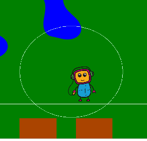
Markera Nyckel sprajten och klicka på fliken Klädslar.
Klicka på Rita ny klädsel 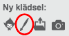
Rita en rund cirkel i en ljus färg med hjälp av Cirkelverktyget
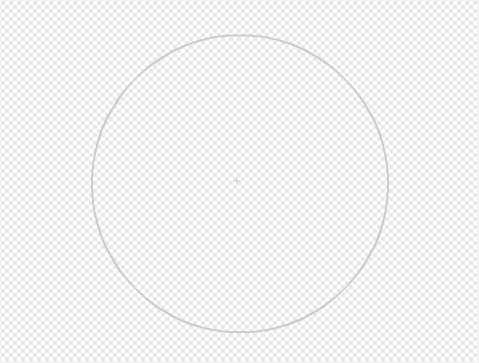 Ungefär så här stor ska cirkeln vara
Döp klädseln till cirkel. Du kan ändra namnet på en klädsel i den lilla textrutan ovanför alla ritverktyg.
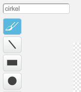
Skriv in namnet på klädseln och tryck på Enter
Nu är det äntligen dags att koda! Vi ska placera ut ett antal nycklar slumpmässigt på scenen och om Roboten kommer nära dem ska den få poäng.
Börja med att skapa en variabel som heter "Antal nycklar". Den kan vara synlig på scenen.
Skapa ett skript för Nyckeln som säger
När START klickas på
Sätt "Antal nycklar" till 0
Göm
REPETERA 5 gånger
Vänta 3 sekunder
Skapa klon av mig själv
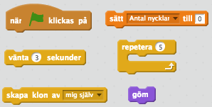
Detta är startskriptet för nyckeln. Eftersom vi kommer att skapa nycklar med hjälp av KLONER kommer vi att gömma sprajten. Sedan placerar vid ut 5 KLONER på scenen med 3 sekunders mellanrum.
Nu ska vi koda vad som händer när klonerna startar.
Börja med att skapa två variabler "mitt x" och “mitt y”. OBS! Dessa två variabler ska endast vara för Nyckel–sprajten. De ska inte visas på scenen.
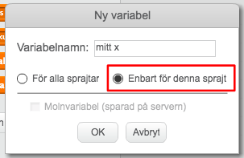
Det är viktigt att du kryssar i "Enbart för denna sprajt"
Detta kommer att vara klonens x- och y–koordinater i samma koordinatsystem som bakgrunden.
Skapa ett skript för nyckeln som säger
När meddelandet "flytta" tas emot
Gå till x: "fokus x" – “min x”, y: “fokus y” – “min y”
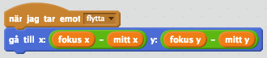
Detta skript kommer göra så att nyckeln placeras ut på bakgrunden.
Jämför denna kod med koden för till exempel sprajten upp_vänster! Det är ungefär samma kod och har samma syfte.
Skapa ett till skript för nyckeln som säger
När jag startar som klon
Sätt "mitt x" till slumptal mellan –480 och 0
Sätt "mitt y" till slumptal mellan 0 och 360
För alltid
OM avstånd till Robot är mindre än 50
Visa
Byt klädsel till cirkel. Detta är den klädsel du ritade nyss.
OM avstånd till Robot är mindre än 10
Byt klädsel till key. Detta är nyckeln-klädseln.
Ändra "Antal nycklar" med 1
Vänta 1 sekund
Radera klonen
ANNARS
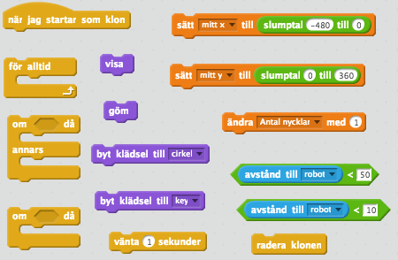
Dessa kodblock behöver du för skriptet ovan
Först kommer klonen att få slumpmässiga koordinater. Sedan så kollar vi om Roboten är i närheten av Nyckeln. Om den inte är i närheten gömmer vi sprajten och om den är i närheten visar vi den som en cirkel. Om den däremot är riktigt nära så visar vi nyckeln och tar bort klonen.
Testa spelet! Hittar du fem nycklar? Visas ledtråden?
Grattis, nu har du skapat ett nytt program!
Glöm inte att spara ditt projekt! Döp det gärna till uppgiftens namn så att du enkelt kan hitta den igen.
Testa ditt projekt Visa gärna någon det som du har gjort och låt dem testa. Tryck på DELA för att andra ska kunna hitta spelet på Scratch. Gå ut till projektsidan och låt någon annan testa spelet!
Det färdiga spelet är bara en prototyp. Det finns många sätt du kan utveckla spelet att bli bättre. Var kreativ! Här är några förslag på vad du kan göra.
På bakgrunden var vi ritat ut blåa fält som ska föreställa vatten och bruna fält som ska föreställa hus. Nu kan roboten gå över dem. Gör så att något händer när roboten går på till exempel ett blått fält. Du kan använd dig av ett kodblock "rör färgen … ?"
För tillfället så skapas bara fem nycklar och när roboten har hittat alla så är spelet slut. Koda så att fler nycklar skapas. Det är bra om antalet nycklar på scenen begränsas så att inte den blir full av nycklar.
Rita fler sprajter som kan användas som bakgrund. Se bara till att det är 480 x 360 pixlar stora.
Så här kan du göra:
Klicka på "Rita ny sprajt"
Färga sprajten med grönt genom att använda Färgburken
Lägg till ett skript så att sprajten placeras korrekt när meddelandet "flytta" tas emot
Ändra i Robotens skript som körs när piltangenterna trycks ned
Ändra i Nyckelns skript så att de kan placeras ut på den utökade bakgrunden
Vad är en koordinat?
Hur lång är x–axeln i Scratch?
Hur lång är y–axeln i Scratch?
Vilken koordinat har mitten på scenen?
Vad innebär det att Remixa ett projekt?
Varför behövs det nytt koordinatsystem för bakgrunden?
Vad används KLONER till?
Varför är det bra att använda KLONER i ställer för flera sprajter som ser likadana ut?